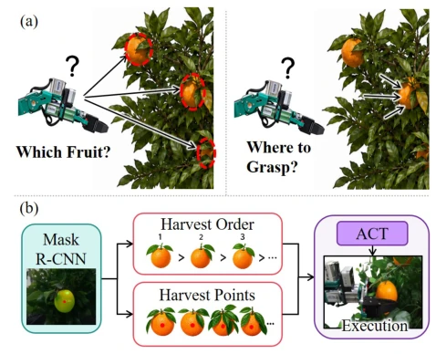
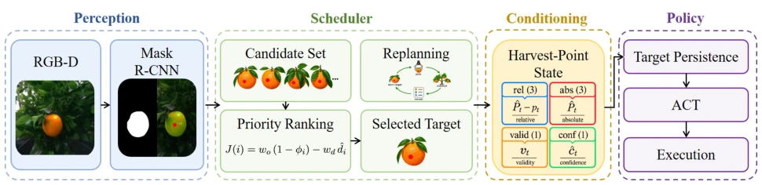
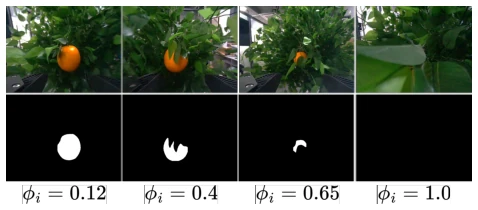

This paper adds a "navigator" to ACT. Although claimed to be end-to-end, it actually hard-codes the most difficult "which fruit to select" and "where to grasp" into the perception module, while the policy network is only responsible for "walking over there". This semi-end-to-end approach is quite practical in agricultural scenarios, after all, fruits fly around randomly in orchards, and pure visual guessing of targets is prone to failure. However, experiments were all conducted on fake trees; can it withstand occlusion and lighting changes in real orchards? That "target persistence" mechanism is considered a patch, assuming fruits do not move; once leaves completely cover the fruit, this strategy goes blind. Overall, it is a very clever engineering compromise, not academically disruptive, but has better deployability than pure VLA. It solves the pain point of target ambiguity in ACT for harvesting tasks, but at the cost of introducing complex scheduling logic.
Agricultural harvesting automation level is low, the bottleneck lies in perception-action coupling [1], [2]. Traditional pipeline error accumulation [3]. Imitation learning (such as ACT [4]) is good, but faces problems of target ambiguity and difficult grasp point inference [6]-[8]. Existing methods either only provide RGB, or provide mask without specifying specific grasp points, causing the policy to easily drift or grasp incorrectly under occlusion. Need to explicitly inform the policy "which to grasp" and "where to grasp", and solve the occlusion loss problem. Additionally, harvesting order affects efficiency, but existing methods are difficult to adjust dynamically, causing failure due to movement of surrounding fruits after harvesting. Therefore, a system capable of explicitly encoding target geometric information and possessing robustness is needed.

Fig. 1. (a) The robot must determine which fruit to pick and where to grasp it during harvesting. (b) Overview of HarvestPoint-ACT.
The overall process is divided into three layers: Perception, Scheduling, Policy. Perception uses Mask R-CNN plus keypoint branch, outputs mask and harvest point (gripper closure point) for each fruit, rather than simple centroid, ensuring grasp point avoids fruit stem. Scheduler sorts based on occlusion index and movement distance, selects optimal target, and re-detects and re-sorts after each attempt. At the policy end, the selected target is encoded as an 8-dim state (relative/absolute coordinates, validity, confidence) input into ACT's Transformer input token, making the policy clearly know the target location. Innovations lie in Explicit Conditioning and Persistence mechanism: If detection is lost, keep last frame coordinates and mark as stale, reschedule after timeout, avoiding policy switching target due to temporary occlusion. Additionally, depth check ensures keypoints are on fruit surface, preventing depth artifacts. This design retains ACT backbone, only adds one input token, achieving decoupling of task-level decision and action-level execution.

Fig. 2. Overview of HarvestPoint-ACT. Instance segmentation yields a mask and a harvest point per fruit. A task-level scheduler selects the target. The target enters the policy as an eight-dimensional harvest-point state alongside the RGB frame and proprioception, and the transformer regresses a chunk of H future end-effector displacements.

Fig. 4. Occlusion index on wrist-camera views. For each fruit, the occlusion index ϕi in (6) measures the fraction of the mask boundary that is adjacent to near occluders (neighboring fruits or foliage). Low ϕi indicates a freer fruit that should be picked earlier. High ϕi indicates a deeply occulded fruit.
Experiments on artificial citrus trees, 6-DOF robotic arm + RealSense. 100 demonstration data. Baselines include ACT (RGB only), ACT+masks, Diffusion Policy, SmolVLA. Metrics include success rate, approach success rate, cycle time. HarvestPoint-ACT achieves 88% success rate, baselines all 0% (unable to complete grasp). 75% success under heavy occlusion. Failure modes are mainly leaf dragging or contact causing fruit drop. Proves explicit grasp point conditioning effective, but relies on artificial fruit no-damage assessment. Experiments show higher occlusion index, longer cycle time, but system still works. Comparison shows, only giving RGB or mask cannot solve grasp point localization problem, must explicitly input geometric information.